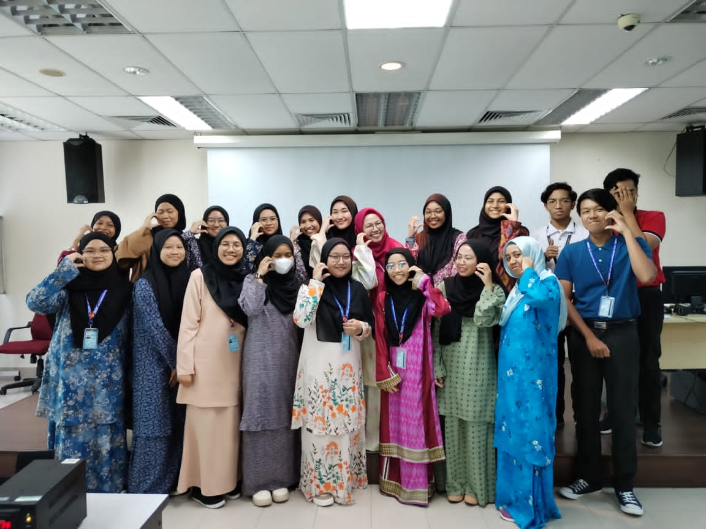
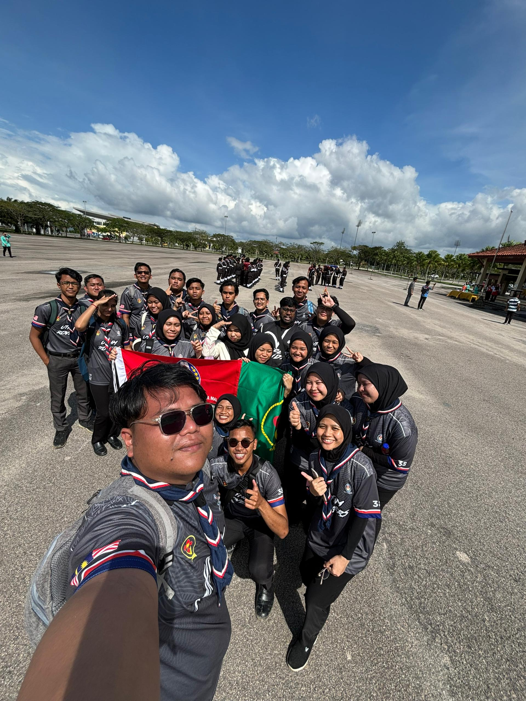
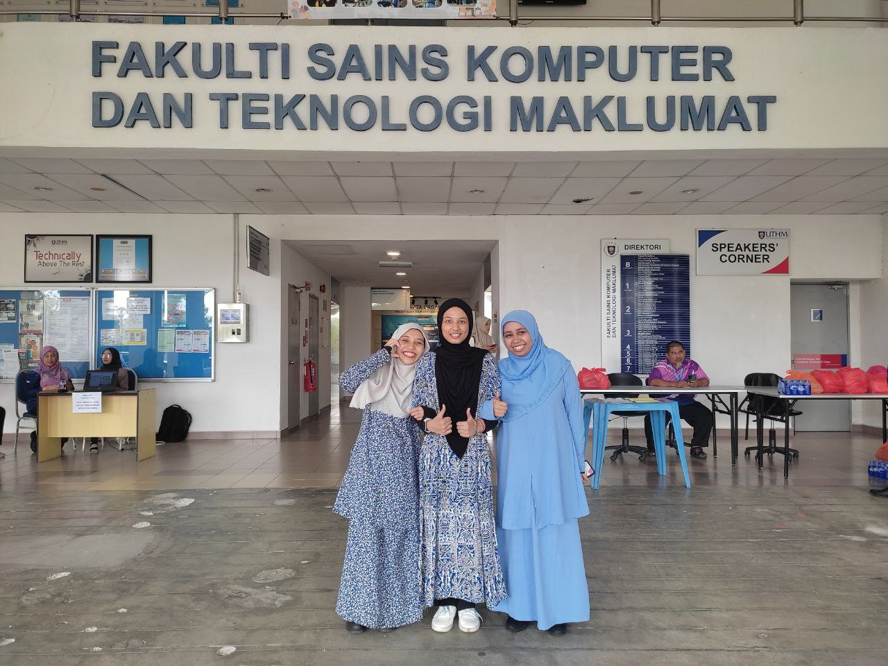
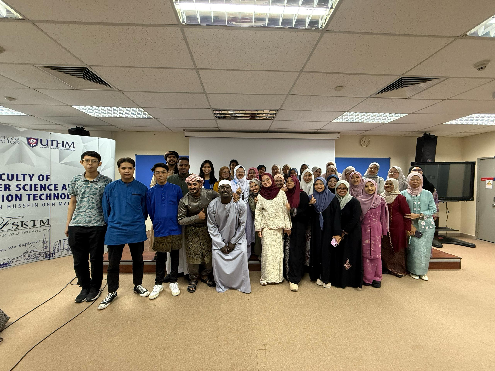
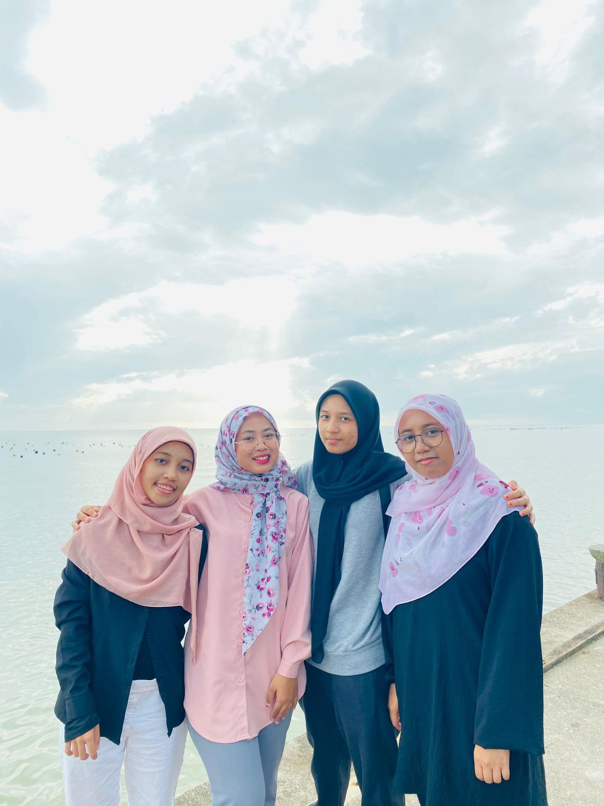

Here are some of my favorite campus moments:
🎓 First day at UTHM with classmates

🎖️ Joined UTHM co-curiculum marching Competiotion

🌸 Celebrated Hari Raya with classmates


🏕️ Went on a trip to Sungai Lurus with friends
